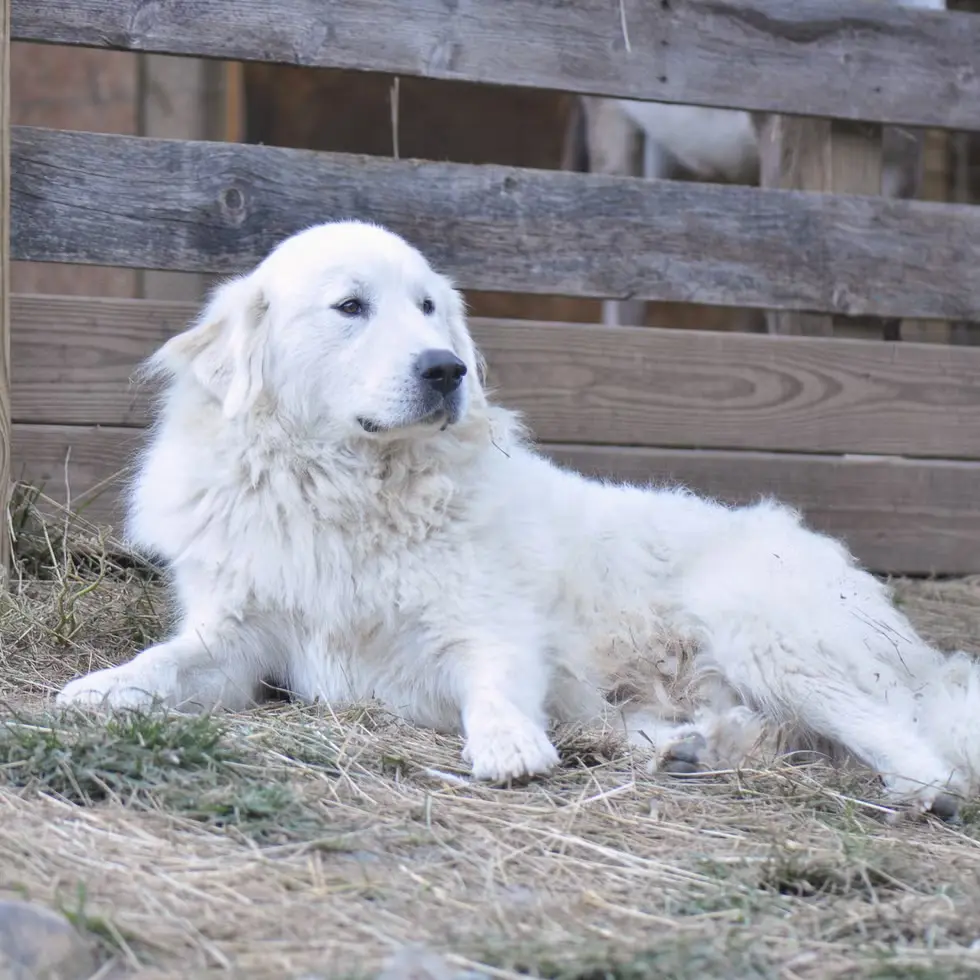
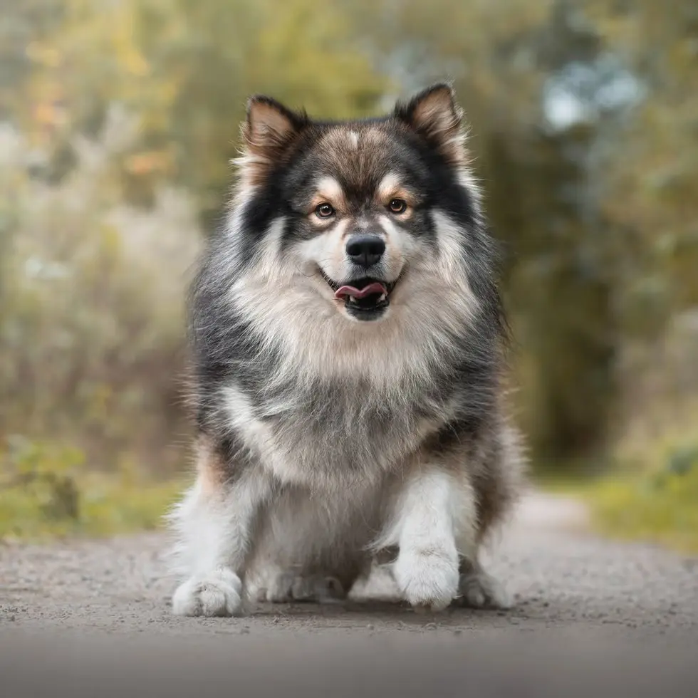
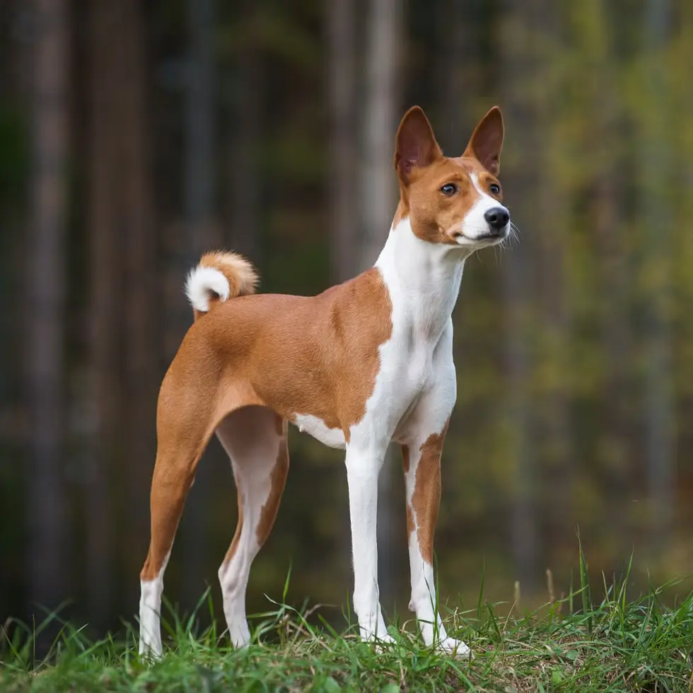
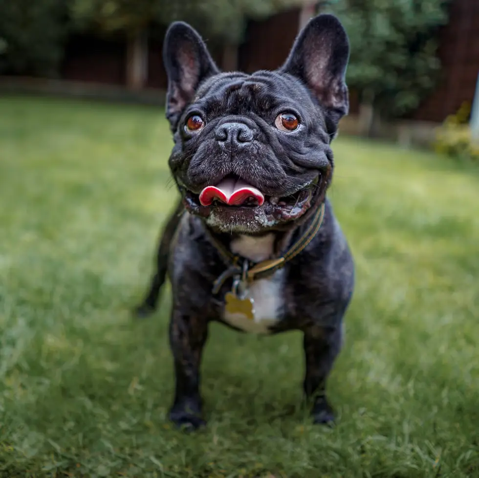
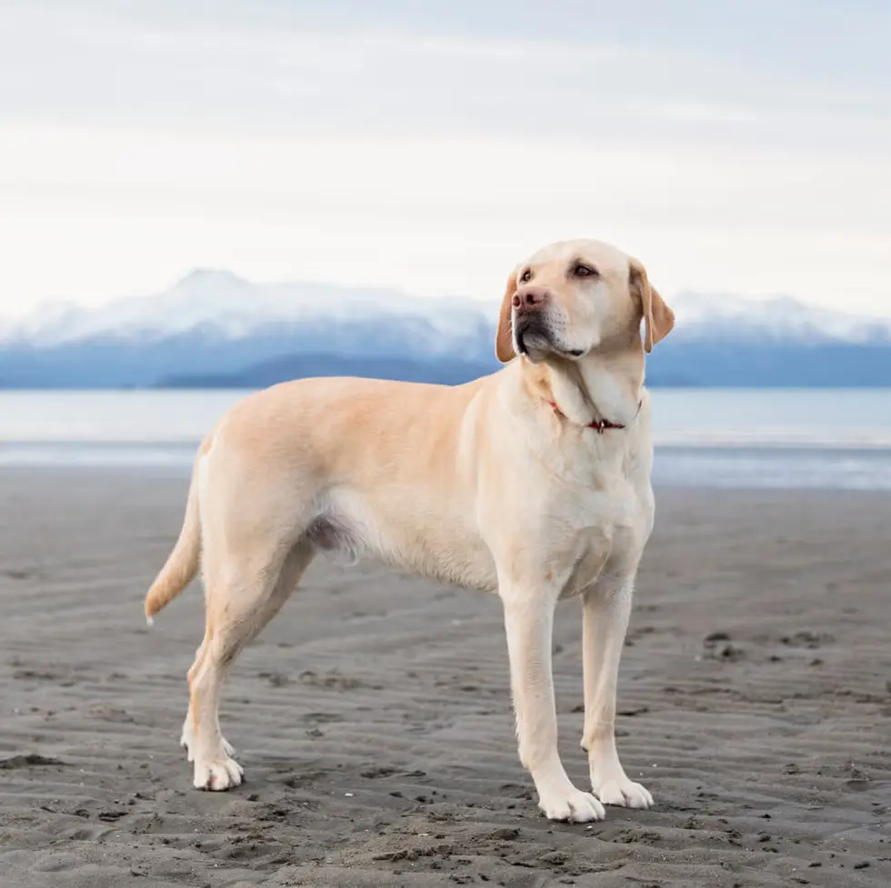
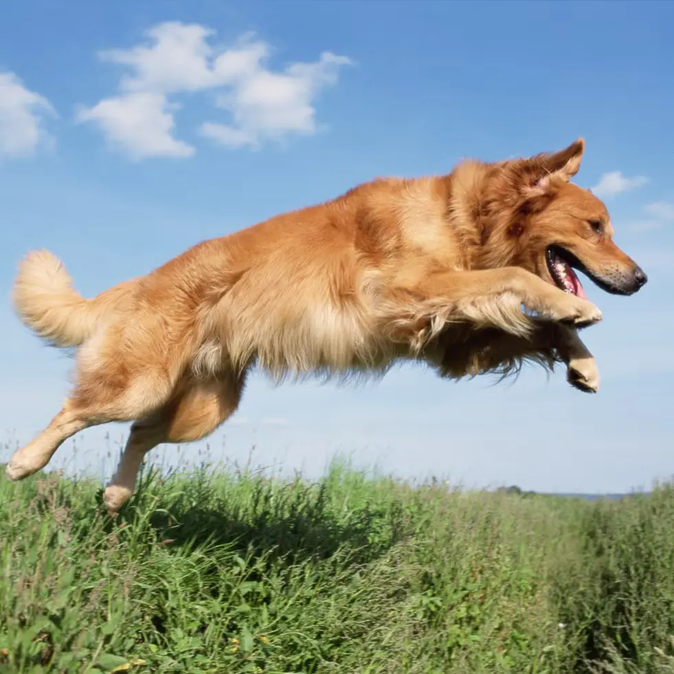
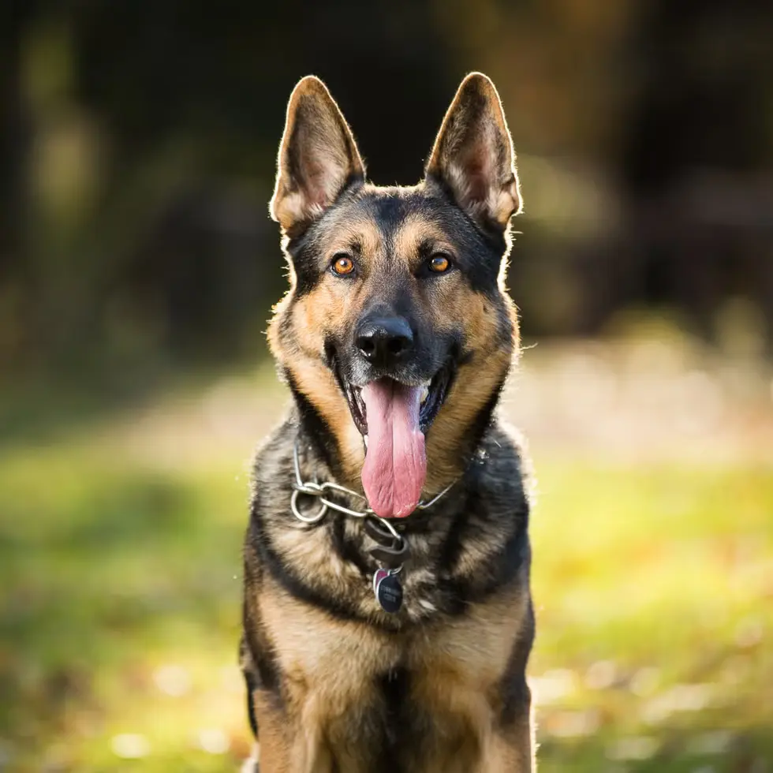
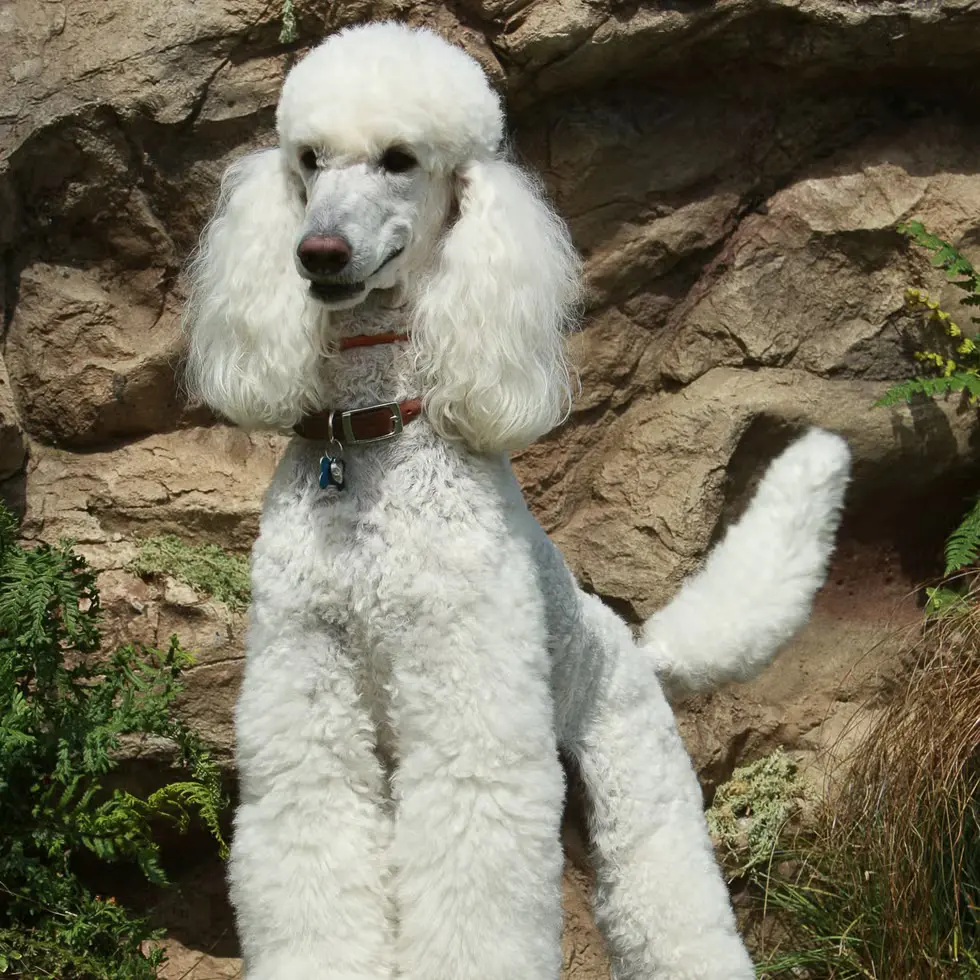

-

Great Pyrenees -

Finnish Lapphunds -

Basenjis -

French Bulldogs -

Labrador Retrievers -

Golden Retrievers -

German Shepherds -

Poodles -
serious dog
-
 serious dog
serious dog
-
serious dog
inching ever closer to the top 50 are these friendly and cuddly gentle giants, who can weigh over 100
pounds. Their thick, waterproof coat makes them cold-weather friendly, and their mellow persona makes
them family-friendly. No wonder they jumped five whole spots on the AKC's most recent ranking!